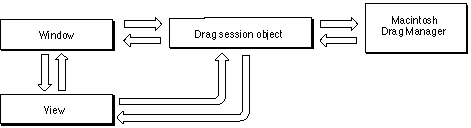

Legacy Document
Important: The information in this document is obsolete and should not be used for new development.
Important: The information in this document is obsolete and should not be used for new development.


Overview
A MacApp application can move or copy data through direct cursor manipulation, a facility known as drag and drop. Your application can drag and drop data within a view, between views, and between itself and other applications (including the Finder) that support drag and drop of similar data types. MacApp's drag-and-drop support relies on the Macintosh Drag Manager. The Drag Manager is integrated into System 7.5 and later versions of the Macintosh Operating System. Releases of System 7 before version 7.5 require the addition of the Macintosh Drag and Drop extension.MacApp users who are familiar with the OpenDoc Application Platform Interface (API) will notice similarities between MacApp's implementation of drag and drop and OpenDoc's. This similarity is intentional and should give users of either API a head start when switching between the two models.
Several MacApp view classes have built-in support for drag-and-drop operations--your application turns on this support by setting drag-related fields. See Chapter 28, "Working With Drag and Drop," for information on how to build your application to include MacApp's drag-and-drop support.
A global drag session object (based on the
TDragDropSessionclass) manages communication with the Drag Manager during drag-and-drop operations. A view that supports dragging or dropping registers with its window, and the window registers with the global drag session object.Figure 9-1 shows the communication between window, view, and drag session objects during a drag operation. A view initiates dragging by calling a method of the drag session object, which in turn calls on the Macintosh Drag Manager to start a drag session. During the session, the Drag Manager makes callbacks to the drag session object. The drag session object passes these calls on to either the window or the view.
Figure 9-1 Communication during a drag session

When a user drags data over a MacApp window, the drag session object asks the window to supply a target view to receive the dragged data. If the user drops the data into the view, the drag session asks the view to create a command object to transfer the data. The type of command created depends on whether the dragged data is copied or moved, and whether the source is inside or outside the application.
MacApp uses linked commands to perform or undo a drag move operation within the application, which may involve changing data in two contexts. One command deletes the data from the source and the other adds it to the destination. For more information on linked commands, see page 265.
Most drag-and-drop functions are performed by a view object, working together with the global drag session object. A view specifies whether it will supply or accept drag data. The view also supplies visual feedback by
Table 9-1 describe the components of MacApp's drag-and-drop support.
- setting the cursor image appropriately for dragging; for example, a
TPictureview sets the cursor to an open "grabber hand" when a click would initiate a drag, and sets it to a closed hand when a drag is actually initiated (this is the default behavior supplied byTView)- supplying an outline region to represent the data dragged out of it
- highlighting itself and possibly showing an insertion point when it is tracking a drop
For more information on using drag and drop in your application, see Chapter 28, "Working With Drag and Drop."